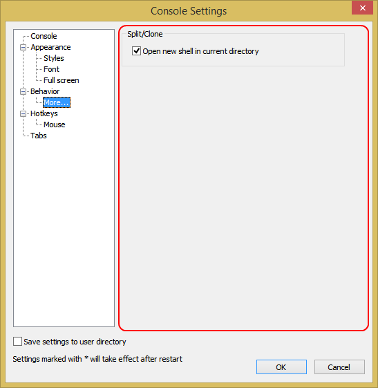

Open new shell in current directory
If checked, new shell created by following actions will use the same current directory as the active view:
Split the current view horizontally
Split the current view vertically
Clone the current view in a new tab